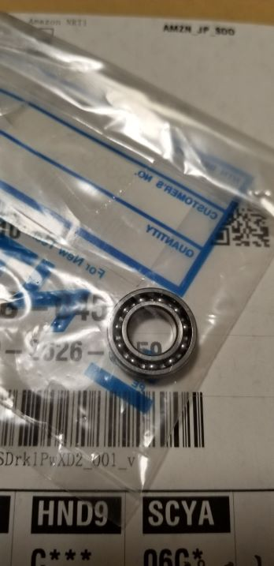
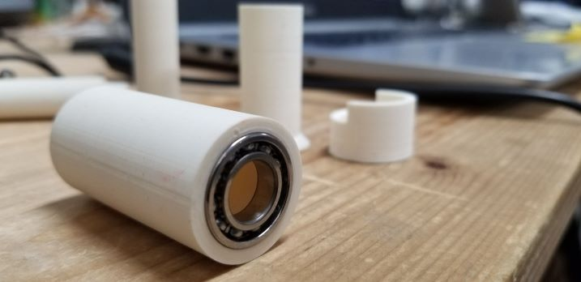
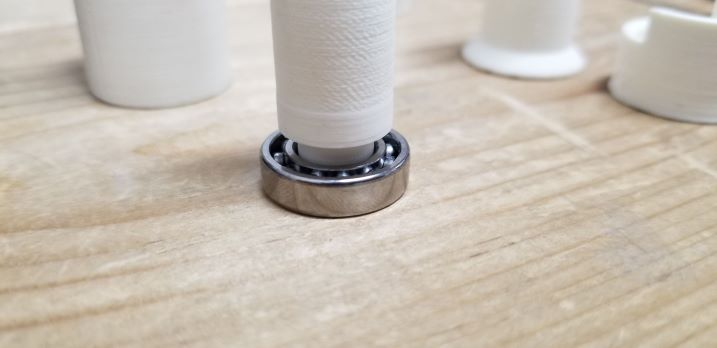

今までの試作パーツから、実際に機能するものを作成しました。また、注文していたベアリングが届いたので、それを事前にいくつかプリントしたものにはめ込み、寸法を調整するなどしました。



今回は重心をずらす仕組みと、どのようにして機能させるのかを考え、製作しました。
完成した試作を使って実際に使用した結果、まだ動作が不安定で、印面がずれてしまうことが多々ありました。私が押してみたら、10回のうち4回（40％）はイメージと違う動きをしてしまうこと。ファブラボにいた方々に使用してもらったときは10回のうち5回（50％）はずれてしまうという結果になりました。
そこで、はんこを押すときの動作を観察することにしました。その結果、今回作成したものは大雑把には機能しているが、はんこを押す直前に印面がずれていることがわかった。具体的には、体の向きや姿勢、右手で押す場合、左手で押す場合などの条件で地味にずれてしまっていた。加えて、はんこを押す直前に本体を紙に対して垂直にする人と、紙に対して水平にしてから押す人がいることがわかった。
最後に、この試作の使い方を統一し条件をそろえた。その使用方法を4人に教えた後にはんこをおしてもらうと、印面を確認せずに向きを合わせることができた。しかし人によってはまっすぐ自分の方に向かず、やや斜めってしまった。今後の課題として、もっと高精度かつ無条件に印面を合わせるように調節することと、今回の試作品では、重心をずらす仕組みが非常に仮設的であり見栄えが最悪であった。この仕組みをスマートに本体に違和感がないように設置することだ。